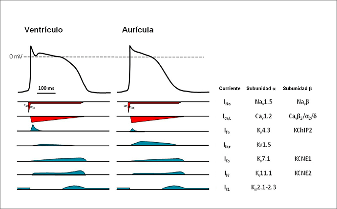
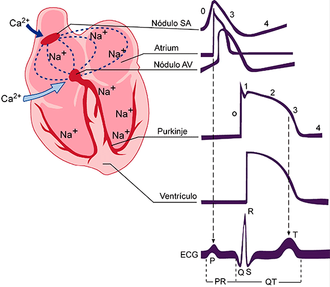

Fundamentos Fisiológicos y Técnicos
Antes de leer un trazo electrocardiográfico, es indispensable comprender por qué se produce la señal eléctrica cardíaca y cómo se registra en el papel. Este capítulo sienta las bases sobre las que se construye toda la interpretación del ECG.
Objetivo del capítulo: Entender la electrofisiología celular, el sistema de conducción, el concepto de vector eléctrico y las características técnicas del papel de registro.
1. Bases Electrofisiológicas
El electrocardiograma es el registro en la superficie corporal de los cambios eléctricos que ocurren durante el ciclo cardíaco. Todo comienza a nivel celular.
Potencial de Acción Cardíaco
Las células cardíacas son excitables: en reposo mantienen una diferencia de potencial entre el interior (negativo) y el exterior (positivo) de la membrana celular, llamada potencial de membrana en reposo (aproximadamente –90 mV en células ventriculares).
Cuando la célula se estimula, ocurre un cambio rápido y secuencial en la permeabilidad iónica de la membrana. Este cambio se denomina potencial de acción y consta de cinco fases:
| Fase | Nombre | Ión principal | Descripción |
|---|---|---|---|
| 0 | Despolarización rápida | Na⁺ (entrada) | Inversión rápida del potencial hasta +30 mV |
| 1 | Repolarización temprana | K⁺ (salida) | Leve descenso inicial del potencial |
| 2 | Meseta (Plateau) | Ca²⁺ (entrada) | Potencial estable; desencadena contracción |
| 3 | Repolarización rápida | K⁺ (salida) | Retorno al potencial de reposo |
| 4 | Reposo / automatismo | Na⁺, K⁺, Ca²⁺ | Estable (trabajo) o despolarización espontánea (marcapasos) |
Autopercepción

Despolarización y Repolarización
Despolarización: Es el proceso por el que la célula pasa del estado de reposo (carga negativa interna) a un estado de excitación (carga positiva interna). En el ECG, la despolarización auricular genera la onda P y la despolarización ventricular genera el complejo QRS.
Repolarización: Es el proceso inverso, por el cual la célula recupera su potencial de reposo. La repolarización ventricular genera la onda T en el ECG.
Regla nemotécnica: D → P, QRS / R → T. La Despolarización produce las ondas P y QRS; la Repolarización produce la onda T.
2. Sistema de Conducción
El corazón posee un sistema especializado que genera y conduce el impulso eléctrico de forma ordenada, garantizando una secuencia coordinada de contracción auricular y ventricular.
Nodo Sinusal (SA)
Es el marcapasos natural del corazón. Ubicado en la unión de la vena cava superior con la aurícula derecha. Genera impulsos a una frecuencia de 60–100 lpm en condiciones normales. Su automatismo es el más rápido del sistema, por lo que domina el ritmo cardíaco.
Nodo Auriculoventricular (AV)
Localizado en el triángulo de Koch (aurícula derecha). Su función principal es retrasar el impulso (~120–200 ms) para permitir que las aurículas terminen de contraerse antes de que los ventrículos se activen. Este retraso se refleja en el intervalo PR del ECG.
Haz de His
Única conexión eléctrica entre aurículas y ventrículos (el anillo fibroso que las separa es eléctricamente aislante). El Haz de His se divide en dos ramas: rama derecha y rama izquierda.
Fibras de Purkinje
Red subendocárdica de alta velocidad de conducción que distribuye el impulso por ambos ventrículos de forma casi simultánea, garantizando una contracción sincrónica y eficiente.
| Estructura | Velocidad de conducción | Frecuencia de escape |
|---|---|---|
| Nodo SA | 1 m/s | 60–100 lpm |
| Nodo AV | 0,05 m/s (lento) | 40–60 lpm |
| Haz de His / Ramas | 2–4 m/s | 25–40 lpm |
| Fibras de Purkinje | 4 m/s (más rápido) | 20–40 lpm |

3. Vectores Cardíacos
Concepto de Dipolo Eléctrico
Cuando una célula cardíaca se despolariza, la diferencia entre la zona despolarizada (negativa) y la zona aún en reposo (positiva) genera un dipolo eléctrico: una fuerza con magnitud y dirección, es decir, un vector.
El electrocardiograma registra la suma de todos los vectores de despolarización celular que ocurren simultáneamente en el corazón. Este vector resultante se llama vector cardíaco instantáneo.
Deflexión según el electrodo
La dirección del vector respecto al electrodo determina el tipo de deflexión registrada:
- Vector que se acerca al electrodo → deflexión positiva (hacia arriba).
- Vector que se aleja del electrodo → deflexión negativa (hacia abajo).
- Vector perpendicular al electrodo → deflexión bifásica o pequeña.
Este principio vectorial es fundamental para entender por qué la misma despolarización cardíaca genera morfologías diferentes en distintas derivaciones.
4. El Papel de Registro
El ECG se registra en papel milimetrado especial con cuadrículas de diferentes tamaños. Comprender su escala es imprescindible para medir correctamente intervalos, segmentos y voltajes.
Escala de Tiempo (eje horizontal)
La velocidad estándar de registro es 25 mm/s, lo que significa:
- Cada cuadro pequeño (1 mm) = 0,04 segundos (40 ms)
- Cada cuadro grande (5 mm) = 0,20 segundos (200 ms)
Escala de Voltaje (eje vertical)
La calibración estándar es 10 mm/mV, es decir:
- Cada cuadro pequeño (1 mm) = 0,1 mV
- Cada cuadro grande (5 mm) = 0,5 mV
| Medida | Cuadro pequeño (1 mm) | Cuadro grande (5 mm) |
|---|---|---|
| Tiempo | 0,04 s (40 ms) | 0,20 s (200 ms) |
| Voltaje | 0,1 mV | 0,5 mV |
Importante: Antes de interpretar cualquier ECG, verifica que la señal de calibración sea de 10 mm (1 mV). Un ECG a media calibración (5 mm/mV) hará que los voltajes parezcan reducidos a la mitad, simulando falsamente bajos voltajes.
Resumen del Capítulo
- El ECG registra la actividad eléctrica cardíaca a través de electrodos en la superficie corporal.
- La despolarización genera las ondas P y QRS; la repolarización genera la onda T.
- El impulso nace en el nodo SA y sigue un orden: SA → AV → His → Ramas → Purkinje.
- Cada estructura tiene una velocidad de conducción y frecuencia de escape diferentes.
- El vector cardíaco que se acerca al electrodo genera deflexión positiva.
- La velocidad estándar es 25 mm/s y la calibración 10 mm/mV.
¿Listo para probarte?
10 preguntas sobre los fundamentos del capítulo. Cada error tiene una reflexión que te ayuda a entender por qué te equivocaste.
Iniciar Quiz del Capítulo 1